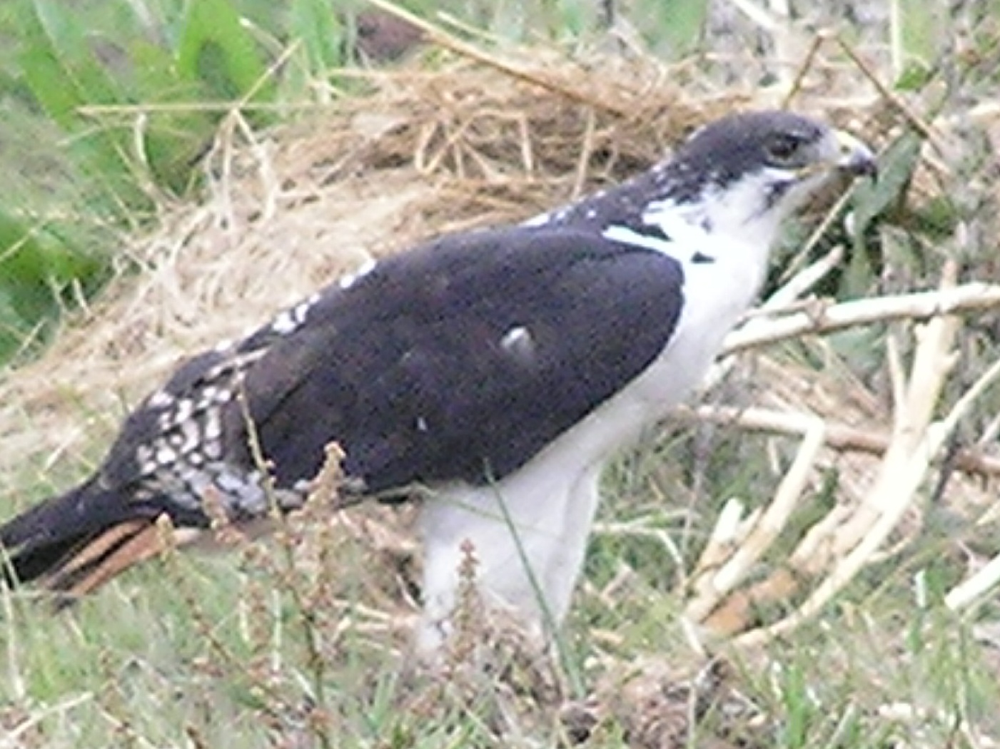
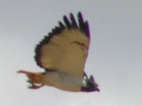
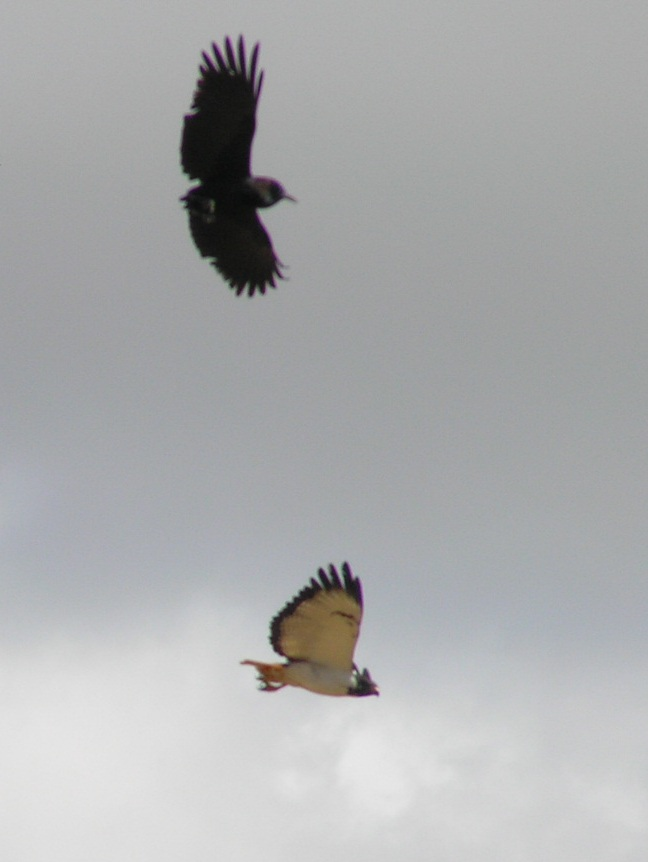
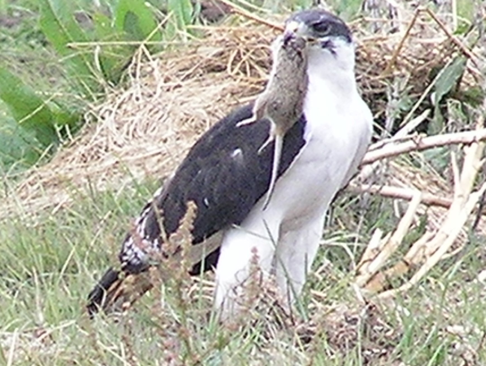
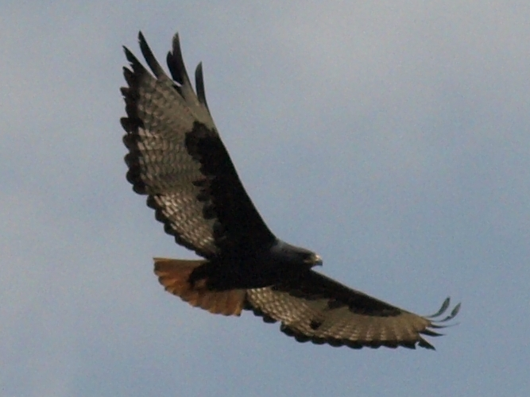

Augur Buzzard (
Buteo Augur
)




Pursued by a Cape Crow. I have also seen it pursued by a kestrel, and (mountain?) buzzard.

A dark morph. This birds partner appeared to be a the more common morph.